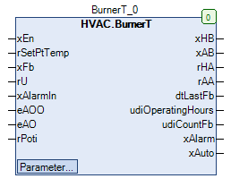

BurnerT (FB)¶
FUNCTION_BLOCK BurnerT
Kurzbeschreibung¶
Steuerung eines Wärmeerzeugers ( Temperaturvorgabe über Temperatursignal )Typische Anwendung: Wärmeerzeugung
Darstellung¶

Funktionsbeschreibung¶
Allgemeines¶
Dieser Funktionsbaustein dient zur Steuerung eines Wärmeerzeugers in Abhängigkeit von der Anforderung des Wärmeerzeugers xEn
und der Vorlaufsolltemperatur rSetPtTemp.
Die Freigabe / Sperrung des Wärmeerzeugers erfolgt über den Ausgang xHB ( FALSE = Sperrung, TRUE = Freigabe ).
Das Temperatursignal wird aus der Vorlaufsolltemperatur rSetPtTemp mittels einer durch zwei Punkte definierten, linearen Kennlinie erzeugt,
falls der Wärmeerzeuger freigegeben ist ( xHB = TRUE ).
Bei gesperrtem Wärmeerzeuger wird die Konstante 0.0 ausgegeben.
Es kommen im Wesentlichen folgende Funktionsbausteine zur Anwendung:
Freigabe / Sperrung des Wärmeerzeugers xHB¶
Die Freigabe des Wärmeerzeugers ( xAB = TRUE, xHB = TRUE ( eManModeB = eManBin.Auto )) erfolgt, falls die Anforderung des Wärmeerzeugers aktiv ( xEn = TRUE ) ist.
Die Sperrung des Wärmeerzeugers ( xAB = FALSE, xHB = FALSE ( eManModeB = eManBin.Auto )) erfolgt, falls die Anforderung des Wärmeerzeugers nicht aktiv ( xEn = FALSE ) ist.
Temperatursignal für den Wärmeerzeuger rHA¶
Das Temperatursignal für den Wärmeerzeuger wird zum Ausgang rAA ( und rHA, falls eManModeN = eManNum.Auto ) übertragen, falls
der Wärmeerzeuger freigegeben ist ( xHB = TRUE ).
Bei gesperrtem Wärmeerzeuger ( xHB = FALSE ) wird die Konstante 0.0 ausgegeben.
Das Temperatursignal wird aus der Vorlaufsolltemperatur rSetPtTemp mittels einer durch zwei Punkte definierten, linearen Kennlinie erzeugt
und absolut auf den Bereich 0.0 - 100.0 % begrenzt.
Die Eingangskennlinie wird durch die Sollwerte / Parameter rTwoPointX1 bzw. rTwoPointX2 definiert.
Die Ausgangskennlinie wird durch die Sollwerte / Parameter rTwoPointY1 bzw. rTwoPointY2 definiert.
Die durch die Punkte P1 ( X1 / Y1 ) und P2 ( X2 / Y2 ) definierte Gerade erlaubt nun die Zuordnung beliebiger Vorlaufsolltemperaturen rSetPtTemp
zu einem Temperatursignal rAA.
Beispiel:
Kennlinie: X1 = 20.0, X2 = 90.0, Y1 = 20.0, Y2 = 100.0
rSetPtTemp = 55.0 °C
rAA = 60.0 %
Handübersteuerung des digitalen Ausgangs xHB¶
Die Freigabe / Sperrung des Wärmeerzeugers ( xHB ) kann entweder im Automatikmodus ( eMANBIN.Auto )
oder in einer der beiden Handbetriebsarten ( eMANBIN.ManOn, eMANBIN.ManOff ) betrieben werden.
xAB eMANBIN xHB Hinweise FALSE eMANBIN.Auto FALSE Handübersteuermodul in Automatik TRUE eMANBIN.Auto TRUE Handübersteuermodul in Automatik X eMANBIN.ManOn TRUE Handübersteuermodul in Handbetrieb Ein X eMANBIN.ManOff FALSE Handübersteuermodul in Handbetrieb Aus
Legende: X = beliebig
Handübersteuerung des analogen Ausgangs rHA¶
Das Temperatursignal ( rHA ) kann entweder im Automatikmodus ( eMANNUM.Auto ) oder in der Handbetriebsart ( eMANNUM.Man ) betrieben werden.
rAA eMANNUM rHA Hinweise Wert eMANNUM.Auto Wert Handübersteuermodul in Automatik X eMANNUM.Man rManValue Handübersteuermodul in Handbetrieb
Legende: X = beliebig
Sammelstörung xAlarm¶
Die Sammelstörung xAlarm ist aktiv ( = TRUE ), falls die Störmeldung des Wärmeerzeugers xAlarmIn aktiv ( = TRUE ) ist.
In allen übrigen Situationen ist die Sammelstörung xAlarm nicht aktiv ( = FALSE ).
Sammelmeldung Automatikbetrieb xAuto¶
Die Sammelmeldung Automatikbetrieb xAuto wird aktiviert ( = TRUE ), falls folgende Bedingungen gleichzeitig erfüllt sind:
- Eingang eAOO = HVACTYPES.eManBin.Auto
- Eingang eAO = HVACTYPES.eManNum.Auto
- Sollwert / Parameter eManModeB = eMANBIN.Auto
- Sollwert / Parameter eManModeN = eMANNUM.Auto
Betriebsstundenzähler - Wärmeerzeuger¶
Der Betriebsstundenzähler ( udiOperatingHours, udiCountFb ) für den Wärmeerzeuger ist aktiv, wenn die Betriebsmeldung aktiv ist ( xFb = TRUE ).
Schreibzugriff auf die Zählerstände
Über den Pfad ‘Instanzname._OperatingHours.udiOperatingHours’ bzw. ‘Instanzname._OperatingHours.udiCountFb’ ist ein Schreibzugriff auf die beide Zählerstände möglich.
Voraussetzung für den Einsatz des Funktionsbausteins BurnerT
Zur korrekten Funktion ist der Einsatz des Funktionsbausteins TimeRead mit xEn = TRUE erforderlich.
Rückführung der Leistung des Wärmeerzeugers rU¶
Die aktuelle tatsächliche Leistung des Wärmeerzeugers kann am Eingang rU angeschlossen werden.
Dieser Eingang wird aktuell nicht für Steuerungs- und Regelungszwecke verwandt.
Rückführung des Handwerts für das Leistungssignal von der Handübersteuerung - Hardware rPoti¶
Die Rückführung des Handwerts kann am Eingang rPoti angeschlossen werden.
Dieser Eingang wird aktuell nicht für Steuerungs- und Regelungszwecke verwandt.
Nicht aktiver Zustand ( xEn = FALSE )¶
xHB xAB rHA rAA dtLastFb udiOperatingHours udiCountFb xAlarm xAuto Hinweise FALSE ( eManModeB = eManBin.Auto ) FALSE 0.0 ( eManModeN = eManNum.Auto ) 0.0 alter Wert alter Wert alter Wert Zustand von xAlarmIn alter Wert xEn = FALSE
Legende: X = beliebig
Visualisierung¶
Codesys¶
- InOut:
Scope Name Type Initial Comment Input xEn BOOL Anforderung des Wärmeerzeugers ( FALSE = Aus, TRUE = Ein ) rSetPtTemp REAL Vorlaufsolltemperatur in °C xFb BOOL Betriebsrückmeldung des Wärmeerzeugers ( FALSE = Aus, TRUE = Ein ) rU REAL 0 Rückführung der Leistung des Wärmeerzeugers in % xAlarmIn BOOL Störmeldung des Wärmeerzeugers ( FALSE = Aus, TRUE = Ein ) eAOO eManBin HVACTYPES.eManBin.Auto Betriebsart der Handübersteuerung - Hardware für den Ausgang xHB eAO eManNum HVACTYPES.eManNum.Auto Betriebsart der Handübersteuerung - Hardware für den Ausgang rHA rPoti REAL Rückführung des Handwerts für das Leistungssignal von der Handübersteuerung - Hardware Output xHB BOOL Freigabe - Wärmeerzeuger nach Handübersteuerung ( FALSE = Aus, TRUE = Ein ) xAB BOOL Freigabe - Wärmeerzeuger vor Handübersteuerung ( FALSE = Aus, TRUE = Ein ) rHA REAL Temperatursignal - Wärmeerzeuger nach Handübersteuerung 0.0 - 100.0 % rAA REAL Temperatursignal - Wärmeerzeuger vor Handübersteuerung 0.0 - 100.0 % dtLastFb DT Datum / Uhrzeit des letzten Betriebs des Wärmeerzeugers udiOperatingHours UDINT Betriebsstunden des Wärmeerzeugers in h udiCountFb UDINT Anzahl der Einschaltungen des Wärmeerzeugers xAlarm BOOL Sammelstörmeldung ( FALSE = Aus, TRUE = Ein ) xAuto BOOL Automatikmeldung ( FALSE = Aus, TRUE = Ein ) Input rTwoPointY2 REAL 100 Kennlinie - Ausgangsbereich - Punkt 2 - Stellsignal hoch rTwoPointX2 REAL 90 Kennlinie - Eingangsbereich - Punkt 2 - Solltemperatur hoch rTwoPointY1 REAL 20 Kennlinie - Ausgangsbereich - Punkt 1 - Stellsignal tief rTwoPointX1 REAL 20 Kennlinie - Eingangsbereich - Punkt 1 - Solltemperatur tief rManValue REAL 0 Temperatursignal - Handwert ( eManModeN = eManNum.Man ) eManModeN eMANNUM eMANNUM.Auto Betriebsart der Handübersteuerung für das Temperatursignal rHA eManModeB eMANBIN eMANBIN.Auto Betriebsart der Handübersteuerung für den digitalen Ausgang xHB